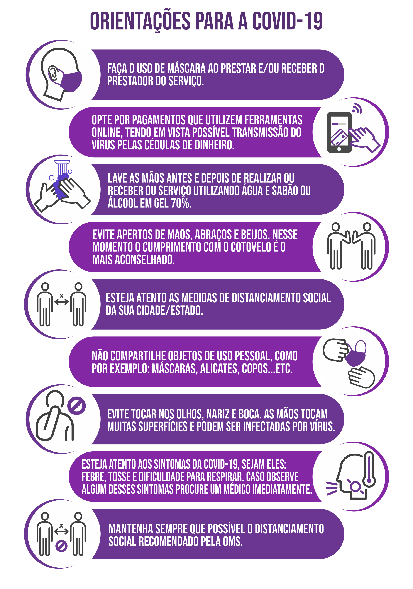

<ion-content fullscreen>

    <ion-fab vertical="top" horizontal="end" slot="fixed" >
      <ion-fab-button (click)="modalClose()" size="small">
        <ion-icon name="close"></ion-icon>
      </ion-fab-button>
    </ion-fab>
  
    <div class="image">
      
    </div>
    <hr class="solid">
</ion-content>
  